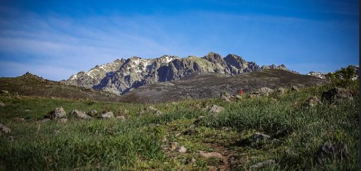
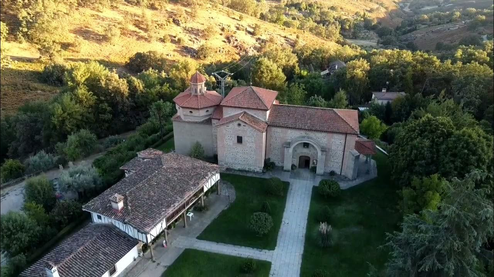

En los alrededores encontrará numerosas rutas de senderismo, siendo nuestra casa el punto de oartida ideal para explorar paisajes espectaculares y disfrutar de un contacto directo con la naturaleza. Desde recorridos sencillos, ideales para disfrutar en familia, hasta rutas más exigentes para los apasionados del montañismo, aquí hay opciones para todos los gustos.
Además, la zona ofrece diversos atractivos culturales y lugares de interés, como el Santuario de Nuestra Señora de Chilla, una visita imprescindible para quienes deseen conocer el patrimonio de la región, y el Castro Celta en la localidad vecina de El Raso.
